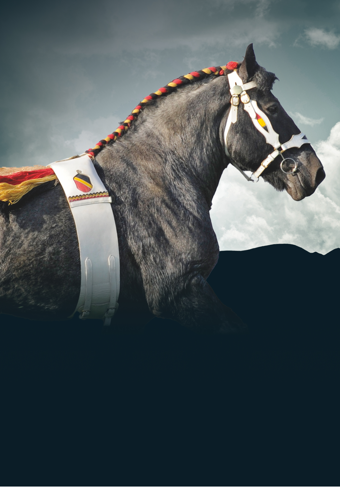

BELGISCH TREKPAARD fokkerij en hengstenstation
Be Prepared For The Mountains And Beyond!
stal ’t rietenhof. thuis van het Belgisch trekpaard.
Wij presenteren onze Hengsten voor 2025.
Het dekseizoen 2025 gaat van start, en onze hengsten staan voor u klaar. Met Colette als kersvers kampioene belooft het een veelbelovend jaar te worden. De volledige website volgt binnenkort, maar hier vindt u alvast alle info over onze hengsten ter dek.